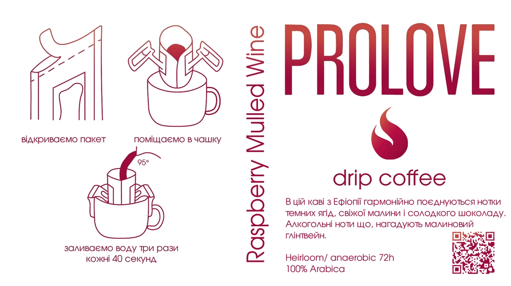

Дріп за 3 хвилини
Вдома з вагами і в дорозі без ваг. Гори, потяг, чого не робити — і таймер, який підкаже, коли доливати.
комікси з таймером — від пачки до чашки
Додай свої поля — помел, каву, температуру. Потім скріншот картки або «Зберегти картинку». Поля запам'ятаються на наступний раз.

Вдома з вагами і в дорозі без ваг. Гори, потяг, чого не робити — і таймер, який підкаже, коли доливати.
Малюємо наступні випуски. Хочеш якийсь раніше — напиши нам в Instagram.